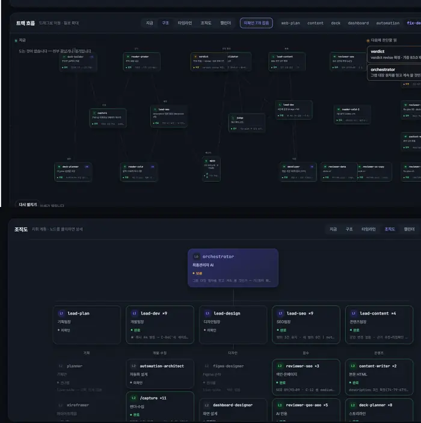

Years in Digital Marketing
PORTFOLIO · 2026
AI AUTOMATION × SEO × WEB MARKETING
검색 유입을 만들고,
웹을 개선하고,
반복 업무를 시스템화합니다.
SEO · AUTOMATION · PRODUCT
이상민
01 PROFILE
콘텐츠에서 시작해
검색과 시스템으로
확장했습니다.
지역 소상공인 Local SEO와 검색광고에서 시작해, 현재는 병·의원 웹사이트의 네이버·Google SEO, Technical SEO, 데이터 분석, 개발 협업과 AI Agent 자동화까지 연결합니다.
대표 타깃 키워드 1페이지 노출
누적 지역 기반 업체 운영 경험
Multi-Agent Workflow
SEO STRATEGY•TECHNICAL SEO•GA4•GSC•CLARITY•FIGMA•AI AGENT•HTML•
02 CAREER EVOLUTION
Marketing → Search →
Technical SEO → Automation
2022.05 — 2023.05
실버아이
영상편집 · 자막 디자인 · 썸네일 · 촬영
VISUAL CONTENT2023.09 — 2025.12
스토리공간
Local SEO · 네이버 블로그 · 플레이스 · 홈페이지 SEO · 검색광고 · 랜딩페이지
LOCAL & SEARCH MARKETING2026.01 — NOW
WACUS
네이버·Google SEO · Technical SEO · Analytics · UX 기획 · AI Agent 자동화
SEO & AUTOMATION03 NAVER SEO PERFORMANCE
SEARCH VISIBILITY IMPROVEMENT
검색 순위를
실제 결과로 증명합니다.
2026년 9월 기준 대표 타깃 18개를 관리해 15개 키워드를 네이버 검색 1페이지에 노출시켰습니다. 작업 전 미노출 또는 2~6페이지권이었던 13개 키워드는 1페이지까지 개선했습니다.
18Target Keywords
15Page 1
13Improved to Page 1
미노출
→ 1위3페이지
→ 1위6페이지
→ 1위4페이지
→ TOP 10※ 고객사명과 도메인은 비식별 처리했습니다. 검색 순위는 시점·환경에 따라 변동될 수 있으며, 수치는 내부 트래킹 기준입니다.
03A SEARCH PROOF
GOOGLE × NAVER SERP
검색 순위를 말하기보다,
실제 검색면을 보여줍니다.
의료·로컬·브랜드 키워드의 실제 Google / Naver 검색 결과를 추적했습니다. 고객사명과 도메인 등 식별정보만 비식별 처리하고, 검색어와 노출 형태는 그대로 남겼습니다.
지역 + 진료과 핵심 키워드
지역 의료 키워드에서 실제 Organic SERP 상위 노출을 확인했습니다.
시술 일반 키워드 · 렌즈삽입술
브랜드 검색이 아닌 시술 일반 키워드에서도 상위 검색면 진입 사례를 확보했습니다.
질환 · 선택 의도형 키워드
사용자의 실제 질문에 가까운 고의도 검색어까지 콘텐츠 구조와 노출 범위를 확장했습니다.
Naver에서도
검색면을 넓혔습니다.
기업·의료 분야에서 로컬 서비스까지.
서로 다른 검색 의도에서 웹사이트 노출을 확인했습니다.
03B AEO / AI CITATION
RANKING → CITATION
검색 노출에서 끝내지 않고,
AI가 인용하는 지점까지.
네이버 AI 브리핑과 Google AI Overview의 실제 인용 화면을 추적했습니다. 웹사이트뿐 아니라 네이버 블로그와 보조 콘텐츠 자산이 AI 응답의 출처로 선택되는지도 함께 확인했습니다.
NAVER AI BRIEFING
질문형 검색에서 AI 답변 영역 진입
지역·질환 조합 검색에서 AI 브리핑 본문과 출처 영역을 모니터링하고 실제 인용 사례를 확인했습니다.
GOOGLE AI OVERVIEW
Naver Blog → Google AI citation
Google AI Overview에서 네이버 블로그 콘텐츠가 출처 카드로 노출되는 사례를 확인하며 채널 간 인용 흐름까지 추적했습니다.
NAVER AI BRIEFING · CASE 02
질환·선택 의도형 질문의 인용 사례
‘황반변성 잘 보는 곳’ 검색에서 AI 브리핑의 콘텐츠 카드와 본문 출처 노출을 확인했습니다.
EXPIRED DOMAIN / SEARCH EXPERIMENT
도메인 확보부터 콘텐츠 운영,
도메인 확보부터 콘텐츠 운영,
검색 노출·AI 인용 추적까지.
01DOMAIN AUCTION낙장도메인 경매를 통한 보조 자산 확보
→
02TOPIC FIT과거 이력·주제 적합성·검색 의도 기준 운영 방향 설계
→
03CONTENT OPS주제별 콘텐츠 발행 및 내부/외부 검색면 확장 실험
→
04SERP / AEO TRACKNaver·Google 노출과 AI 인용 여부 모니터링
※ 만료 도메인 기반 PBN 운영을 포함한 검색·콘텐츠 실험 사례입니다. 공개 포트폴리오에서는 도메인·네트워크·고객사 식별정보를 비공개 처리하며, 특정 인용 결과를 단일 요인의 인과관계로 단정하지 않습니다.
04 TECHNICAL SEO
AUDIT → SPECIFICATION → DEV HANDOFF
진단을
실행 가능한
수정 요청으로.
병원 웹사이트의 중복 URL·메타데이터·사이트맵 문제를 정리하고, 개발팀과 퍼블리셔가 작업할 수 있도록 화면 설명과 구현 참고 코드를 함께 작성했습니다.
01 / URL NORMALIZATION · P.02
중복 URL 30건, 전환 순서까지
같은 문서가 두 주소로 열리는 문제를 정리하고, canonical → 영구 리다이렉트 → sitemap 순서와 제외 대상을 명시했습니다.
02 / CANONICAL + OG · P.05
페이지별 메타데이터를 개발 사양으로
대표 URL·공유 제목·설명을 공용 함수로 연결하고, 목록 페이지의 페이지네이션 처리 기준을 작성했습니다.
03 / STRUCTURED DATA · P.06
병원 정보를 구조화하는 설계
MedicalClinic의 기관 정보·진료시간·채널 연결을 설계하고, 화면 정보와 일치하도록 입력 기준을 정리했습니다.
04 / SITEMAP INTEGRITY · P.08
404·누락·갱신일을 나눠서 요청
404 주소 3건, 누락 경로 5건, lastmod 기준과 리다이렉트 적용 후 URL 교체 시점을 구분했습니다.
DEVELOPMENT COLLABORATION / REDMINE
요청 내용과 진행 이력을 남깁니다.
별도 커뮤니티 프로젝트에서는 robots.txt 변경 요청을 Redmine 일감으로 등록하고 진척도 변경 이력을 관리했습니다. 관리자 기능 개발 건은 작업 범위와 완료 기준을 정리해 개발팀과 협업했습니다.
공유된 캡처의 요청 내용·진척 이력을 요약했습니다. 진척도 100% 표기와 실제 검색 제외 검증은 구분합니다.
중복 응답·메타데이터 불일치·sitemap 누락을 URL 단위로 정리
현재·목표 상태, 대상 범위, 참고 코드와 예외를 함께 명시
적용 순서와 완료 기준을 정리해 개발팀·퍼블리셔와 협업
배포 후 확인할 응답 코드·대표 URL·메타데이터·사이트맵 기준 수립
05 SEO × WEB UX
SEARCH IS NOT
THE FINISH LINE.
Search → Landing → UX → Development → Measurement
GA4 유입경로와 행동 데이터를 기반으로 유저 흐름을 분석합니다.
Microsoft Clarity로 스크롤, 클릭, 이탈 구간을 확인합니다.
CTA 위치, 페이지 구조, 콘텐츠 배치를 실제 화면 단위로 설계합니다.
GOOD AUTOMATION STARTS
WITH KNOWING THE WORK.
06 AI AGENT AUTOMATION
FROM PROMPT TO SYSTEM
AI를 쓰는 것을 넘어,
업무 구조로 설계합니다.
Claude Code 기반 멀티 Agent 시스템을 설계하고, 역할·검수·상태 관리를 분리했습니다. 반복되는 SEO·콘텐츠·QA 업무를 한 번의 대화가 아닌 재사용 가능한 Workflow로 바꾸는 것이 목표입니다.
30Agents
21Commands
52Python Scripts
WACUS · AGENT WORKFLOWLIVE SYSTEM
REQUESTUSER / TASK
→
ORCHESTRATORROUTING
→
LEADPLAN
→
SPECIALISTEXECUTION
→
REVIEWERVERIFY
→
JUDGEDECISION


SENSITIVE LABELS MASKED
01 · REQUEST업무를 자연어로 요청scroll to inspect the workflow
사람은 목표와 제약을 전달합니다.
SEO 진단, 콘텐츠 QA, 데이터 정리, 개발 요청처럼 반복되는 업무를 요청 단위로 등록하고 시스템이 처리할 수 있는 형태로 넘깁니다.
- 업무 목적과 대상 정의
- 긴급도·종류·제약조건 분류
- 고객사별 작업 컨텍스트 연결
한 모델이 전부 하지 않습니다.
Orchestrator가 요청을 분해하고 Lead와 Specialist에게 역할을 배정합니다. 업무 성격에 따라 SEO·개발·콘텐츠·기획 흐름이 달라집니다.
- 역할 기반 분업
- 작업 상태·보류·차단 관리
- 의사결정 이력 보존
실제 자료를 읽고, 계산하고, 수정합니다.
사이트 상태·검색 데이터·문서·Google Sheets 등 업무 자료를 읽고 결과물을 만듭니다. 자동화 스크립트는 반복 수집과 정리를 담당합니다.
- SEO·사이트 구조 진단
- 리포트·시트 자동 갱신
- 콘텐츠·QA 작업 실행
생성보다 검수 구조를 더 중요하게 봅니다.
Reviewer가 누락·오류·규칙 위반을 찾고, Judge가 수정·보류·완료를 판단하도록 분리해 한 번의 출력이 곧 최종 결과가 되지 않게 설계했습니다.
- 독립 Reviewer
- 규칙 기반 Pass / Hold
- 사람의 최종 결정 지점 유지
결과는 다시 실무 도구로 돌아갑니다.
보고서, Google Sheets, 개발 요청서, 수정안처럼 실제 업무에서 다음 행동으로 이어지는 형태로 정리합니다. 목표는 ‘대화’가 아니라 ‘완료 가능한 작업’입니다.
- SEO 진단 보고
- 운영 현황·일일 리포트
- 개발 전달용 수정 요청
01ORCHESTRATOR
→02LEAD
→03SPECIALIST
→04REVIEWER
→05JUDGE
PRIVATE WORKFLOW · 고객사 식별정보를 제외한 구조만 공개합니다.
07 AUTOMATION IN PRACTICE
실제 Claude Code 실행 화면 · Sensitive labels masked
검색 순위 하락 원인 추적
최근 변경사항과 검색 노출 데이터를 비교해 후보 원인을 좁히고, 추가 확인 항목을 구조화합니다.
Google Sheets
일일 리포트 자동화
업체별 방문자 데이터를 수집·계산하고, 기존 시트 형식에 맞춰 수식과 값을 자동 반영합니다.
웹블로그 발행 현황 집계
여러 사이트의 발행 상태를 확인하고 미발행·누락 건을 한 번에 정리해 운영 체크 시간을 줄입니다.
08 PRODUCT PLANNING & PROTOTYPING
SEO 실무 지식을
관리 화면과 서비스 흐름으로 옮깁니다.
요구사항 분석부터 Figma Wireframe, 인터랙티브 HTML Prototype까지 직접 구체화합니다. 디자인 직무를 대체하려는 것이 아니라, 마케팅·SEO 요구를 개발 가능한 언어로 전달하기 위한 역량입니다.
WEBBLOG CMS / SEO ADMIN
SEO 실무를 관리 화면으로
- 메타 템플릿 · 색인 자동화
- 구조화 데이터 · 다국어 · 리디렉션
- 관리자 흐름 안에서 SEO를 운영 가능하게 설계
WHITE-LABEL CLINIC APP
화면보다 먼저 Flow를 설계
- 온보딩 → 권한 → 홈 Action 연결
- 예약 · 회원권 · 포인트 · 알림 정책
- 병원별 Brand Token을 전제로 한 화이트라벨 구조
ADMIN WORKFLOW
운영 요구사항을 인터랙션으로
- 처리할 일 · 변경 이력 · 사용자단 상태를 한 화면에
- 관리자 36 · 사용자단 9 · 신규 제안 5 화면
- 콜아웃과 정책 정의를 함께 전달
REAL FIGMA EVIDENCE요구사항을 Flow와 Wireframe으로
요구사항을 Flow와 Wireframe으로
개발 가능한 단위까지 구체화합니다.
50SCREENS
194CALLOUTS

Flow온보딩 → 권한 → 홈까지 화면 간 Action 연결
Policy확정·조건부·Modal·Back 등 표기 규칙 정의
Admin관리자 36 · 사용자단 9 · 신규 제안 5 화면
Handoff콜아웃과 화면 색인으로 개발 전달 범위 명확화
09 BEYOND SEO
검색 이전의 경험도
버리지 않았습니다.
Naver Place
지도·플레이스 노출과 지역 검색 흐름 분석
Viral / Content
블로그 콘텐츠 기획·제작 및 지역 상업 키워드 운영
Performance
네이버 검색광고 예산·키워드·입찰가 직접 운영
Visual
영상편집·촬영·썸네일·그래픽 제작 경험
SEARCH. BUILD. AUTOMATE.
검색에서 발견되고,
웹에서 경험되며,
AI로 반복되지 않게.
이상민 Portfolio · 2026AI Automation × SEO × Web Marketing